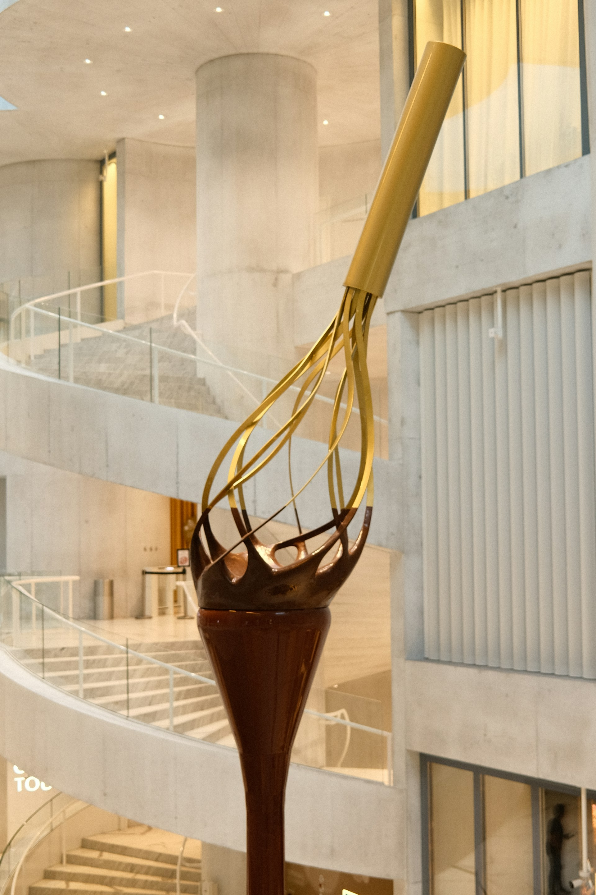
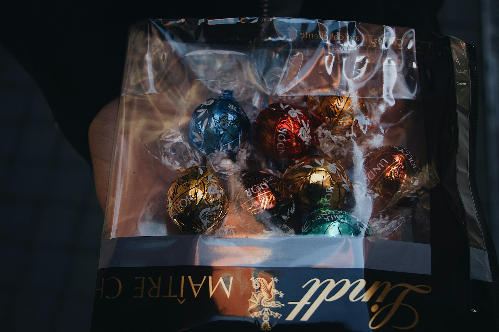
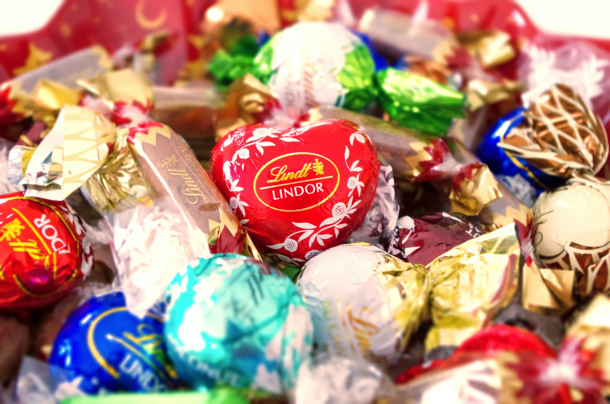
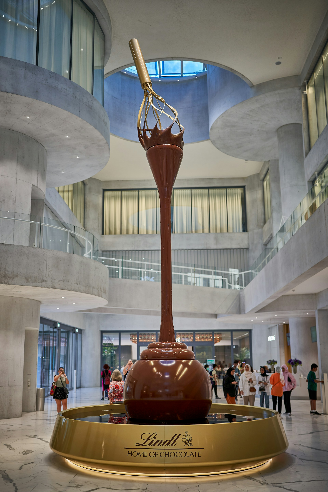

Lindt, el Hogar del Chocolate - Kilchberg (Suiza)
Una auténtica delicia de una de las mejores marcas del mundo

Cuando alguien piensa en Suiza, uno no puede evitar pensar en su chocolate y la gran fama que tiene. La pregunta es, ¿existirá un lugar dedicado a este manjar? ¡La respuesta es sí!
Desde fuentes de chocolate que hasta casi 10 metros hasta la chocolatería Lindt más grande del mundo, este museo es perfecto para los chocolateros que quieran disfrutar de una experiencia inolvidable.
El recorrido incluye una audioguía de hasta 10 idiomas o guías experimentados para aquellos que busquen un trato más humano. También podrás conocer la historia de la marca, crear tu propio chocolate y visitar el primer café Lindt de Suiza.
Puedes consultar más información desde su página web.



Por si todavía estás indecis@, aquí te dejamos este simpático vídeo de la apertura del museo con la presencia de Roger Federer: